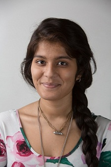
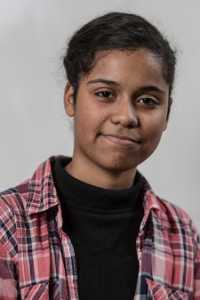
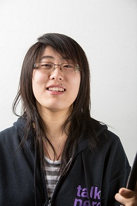
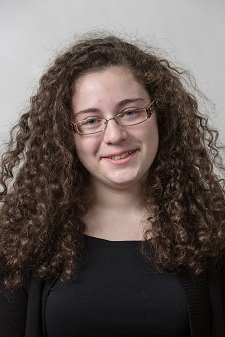
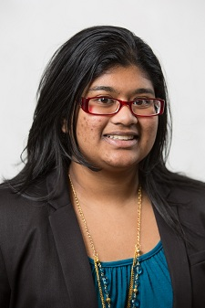
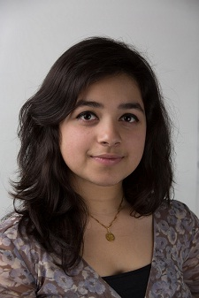
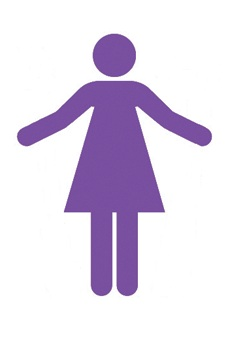

Departments
The department heads collaborate with each other to ensure that plans are executed efficiently and smoothly within their department and in the team. They define goals, set deadlines, organize events, and make sure that everything is completed in a timely fashion.
Captain
|  |
This is Marsha's fourth year on the team. She is currently captain. She loves this team because it has motivated her to pursue a career in technology. She loves all the hands-on experiences which she was exposed to. In her free time, she likes to bake vegan dishes and practice her Bollywood dance skills. It isn't surprising to find her watching cartoons on a Saturday night. |
Co-Captain
|  |
Kiana is the co-captain of the team and is currently a junior. She will be captain next year. |
Head of Construction
|  |
Ashley is the Head of the Construction department. She likes to crack jokes, play video games, watch videos, and have fun! She plans to pursue a career in the engineering field in college. |
Heads of Electronics
|  |
Nadezhda (Nadya) is the co-head of electronics. She is currently a senior, and in her 4th and final year of being a member of this amazing robotics team. She has gained many friends in these past years. Besides building robots, she also loves to draw/sketch, crochet, and listen to different styles of music. |
|  |
Stella is part of the electronics department of the FeMaidens. This is her fourth year on the team. When she is not busy working on the robot, she can be found knitting, making origami, watching tv, listening to music and reading books. |
Head of Programming
|
Anna is the head of the programming branch of the Fe Maidens robotics team. She has been with the team for all of her three years, and is a very devoted member. She loves her programming girls and will defend them to no end. In her free time she enjoys reading Terry Pratchett novels, playing Poptropica, and hanging out with her cats. She is very excited to see the code in action on the playing field! |
Heads of Public Relations
|  |
This is Sadia's third and final year on the team and she can honestly say that her experience as a part of the FeMaidens was life changing and inspirational. As a member of public relations she has learned so much regarding public affairs, outreach, and writing and as a Head of the department she has learned even more. She is really proud of her department for all that they have done for the team. On another note, during her past time Sadia likes to bake, take photos, listening to music and just relax with her family and friends. She also likes to act as though she is mischievous even though she knows and everyone around her knows that she really isn't at all no matter how much she tries. |
|  |
Justina is a student director of the Public Relations department. This is her second year on the team. She enjoys being involved behind the scenes and never hesitates to help out a fellow teammate. When not found behind a computer screen, Justina enjoys writing poetry/short stories in her free time. She is both an avid reader and Batman fan. |